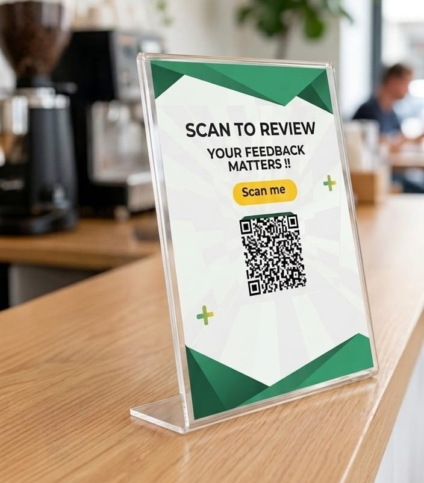

Wonder QR lets customers rate their experience first. Lower or lesser ratings are guided into private feedback, while higher ratings can continue to the public review journey.

Wonder QR creates a feedback gate between the customer's rating and the public review journey. When a customer gives a lower rating, the platform can direct that customer to private feedback so the business can understand the issue and respond.
Higher ratings can continue to the configured public review path. This is designed to make the customer journey more useful while giving businesses a direct channel for unhappy-customer feedback.
Wonder QR combines feedback gating, review routing, customer communication and business management in one platform.
A complete local-business review and feedback system—not just a QR generator.
Lower or lesser ratings can be directed to a private feedback path before the public review journey.
Businesses can use the configured minimum rating threshold for the public review path.
Capture the customer's message and optional contact details so management can follow up.
Every business gets a unique QR code and 4×6 standee for counter, table, reception or display use.
Share the business review link and QR through WhatsApp, device sharing and other available channels.
View private feedback, filter feedback, manage business settings and access QR information.
Subscribed business admins can receive push notifications, including business-specific notifications.
Support business phone, WhatsApp, Instagram, YouTube, Facebook, Pinterest, X and other configured links.
Business owners can access their dashboard with their 4-digit admin PIN.
Sales onboarding, business assignment, performance tracking, incentives and QR generation tools.
Manage businesses, sales reps, assignments, statuses, review settings and operational controls.
Customer and business journeys are designed for phone use with installable app support.
Place Wonder QR at the billing counter, table, reception, salon chair, clinic desk, hotel reception or retail checkout. Customers scan, rate and enter the appropriate feedback or review journey.
Simple for the customer. Actionable for the business.
The customer scans the business QR from the standee or shared link.
A quick 1–5 star rating captures the experience.
Lower ratings can go to private feedback; higher ratings can continue to the configured public review path.
Management can review feedback and use customer contact channels when provided.
Wonder QR gives the owner a working control panel after the QR is deployed.
Use the same feedback-gating concept wherever customers interact with you.
Give every customer a simple way to rate their experience, capture lower ratings privately and create a structured path toward public reviews.
Get Wonder QR for My Business